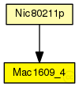
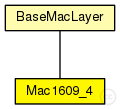

This documentation is released under the Creative Commons license
This documentation is released under the Creative Commons licenseManages timeslots for CCH and SCH listening and sending.
Author: Christopher Saloman
Author: David Eckhoff : rewrote complete model
See also: BaseWaveApplLayer
See also: Nic80211p
See also: PhyLayer80211p
The following diagram shows usage relationships between types. Unresolved types are missing from the diagram. Click here to see the full picture.
The following diagram shows inheritance relationships for this type. Unresolved types are missing from the diagram. Click here to see the full picture.
| Name | Type | Description |
|---|---|---|
| BaseMacLayer | simple module |
Base module for every mac layer module |
| Name | Type | Description |
|---|---|---|
| Nic80211p | compound module |
This NIC implements an 802.11p network interface card. |
| Name | Type | Default value | Description |
|---|---|---|---|
| notAffectedByHostState | bool | false | |
| coreDebug | bool | false |
debug switch |
| headerLength | double | 0 bit |
length of the MAC packet header (in bits) |
| address | string | "auto" |
MAC address as hex string (12 hex digits), or "auto". "auto" values will be replaced by a generated MAC address in init stage 1. |
| useServiceChannel | bool | true |
cycle between an SCH and the CCH (or stay on CCH all the time) |
| serviceChannel | int | 1 |
the service channel this maclayer listens on |
| debug | bool | false |
debug switch |
| bitrate | double | 18 Mbps |
bit rate |
| syncOffset | double | 0.0003s |
little asynchronization between cars |
| txPower | double |
tx power [mW] |
|
| queueSize | int | 0 |
| Name | Value | Description |
|---|---|---|
| class | Mac1609_4 |
| Name | Direction | Size | Description |
|---|---|---|---|
| upperLayerIn | input |
from upper layer |
|
| upperLayerOut | output |
to uppe layer |
|
| upperControlIn | input |
control from upper layer |
|
| upperControlOut | output |
control to upper layer |
|
| lowerLayerIn | input |
from lower layer |
|
| lowerLayerOut | output |
to lower layer |
|
| lowerControlIn | input |
control from lower layer |
|
| lowerControlOut | output |
control to lower layer |
// // Manages timeslots for CCH and SCH listening and sending. // // @author Christopher Saloman // @author David Eckhoff : rewrote complete model // // @see BaseWaveApplLayer // @see Nic80211p // @see PhyLayer80211p // simple Mac1609_4 extends BaseMacLayer { parameters: @class(Mac1609_4); // cycle between an SCH and the CCH (or stay on CCH all the time) bool useServiceChannel = default(true); // the service channel this maclayer listens on int serviceChannel = default(1); // debug switch bool debug = default(false); // length of MAC header, header is already added at 1609_4 headerLength @unit(bit) = default(0 bit); // bit rate double bitrate @unit(bps) = default(18 Mbps); // little asynchronization between cars double syncOffset @unit(s) = default(0.0003s); //tx power [mW] double txPower @unit(mW); int queueSize = default(0); }
This documentation is released under the Creative Commons license